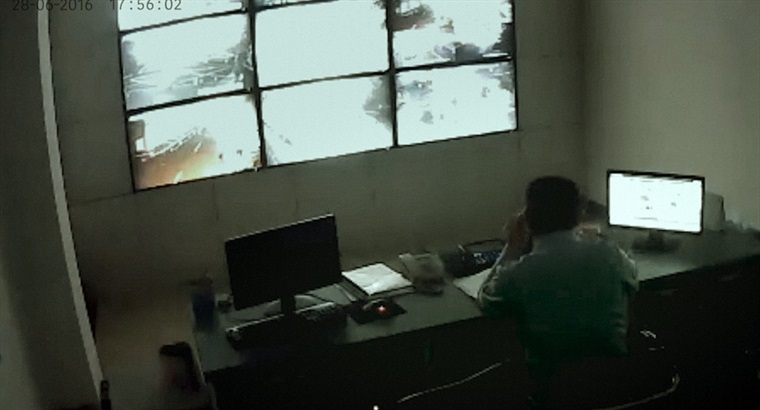

Video, surveillance camera footage taken from public live-streaming websites. 81 minutes.
"I've wanted to make a film from surveillance footage since 2013, but I had no access to the necessary resources. Since 2015, surveillance cameras in China have been linked to the cloud database: countless surveillance recordings have been streamed online. So I took up the project again. I collected a huge amount of footage and tried to use these fragments of reality to tell a story.
With no human agency operating them, surveillance cameras produce fascinating footage round the clock. Ineffably silent, these cameras record incessantly. Sometimes they record images that are beyond logical understanding, captured in one mad, fleeting instant. When these seemingly random yet intricately connected clips are assembled, what's the distance between the video fragments of real life and 'reality'?"